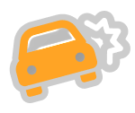

Loading Jayhawk Blvd…
0
%
0
score
3
lives
0
best

TAP TO START
← → or A / D to change lanes · swipe on touch

YOU CRASHED
free tuition for students affected!
final score:
0
tap to drive again
Map data © OpenStreetMap contributors